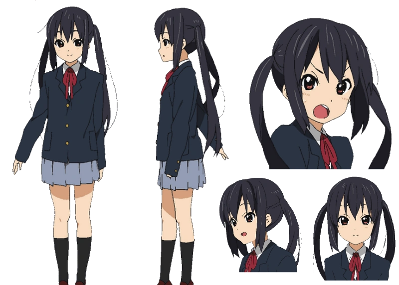

| Azusa Nakano (中野梓) dari K-ON! | |
|---|---|
|
Azusa Nakano atau dipanggil "Azu-nyan" (あずにゃん) oleh Yui Hirasawa, adalah seorang murid di Sekolah Menengah Atas Sakuragaoka. Dia memutuskan untuk bergabung dengan Klub Musik Ringan setelah melihat penampilan band di festival sekolah dan dengan demikian menjadi gitaris irama Hōkago Tea Time. Setelah anggota senior lulus, dia melanjutkan klub dan menjadi presiden baru, serta gitaris utama dan vokalis utama band baru, Wakaba Girls. |
|
|
Penampilan : Azusa memiliki rambut hitam panjang, yang dikenakannya kuncir dua, dan memiliki mata cokelat kemerahan. Dibandingkan dengan warna rambut hitam Mio, rambut Azusa terlihat berwarna ungu di anime. Dia adalah anggota terpendek dari grup. Kulit Azusa berwarna mirip dengan gadis-gadis lain, tapi dia sensitif terhadap sinar matahari dan menjadi cokelat dengan mudah bahkan dengan tumpukan lotion pencegah kulit terbakar. |
|
Pengisi Suara:
|
|
| Foto | |
|  | |